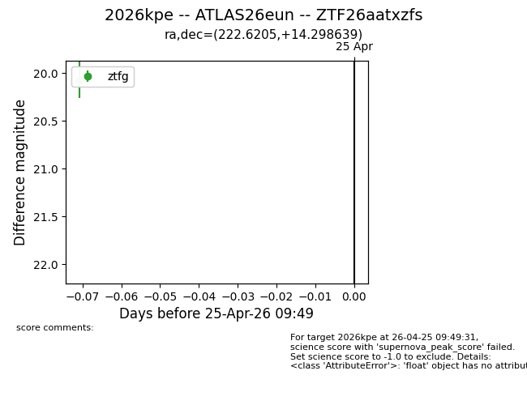
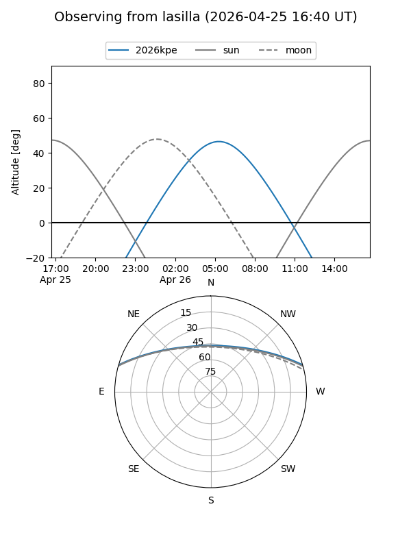
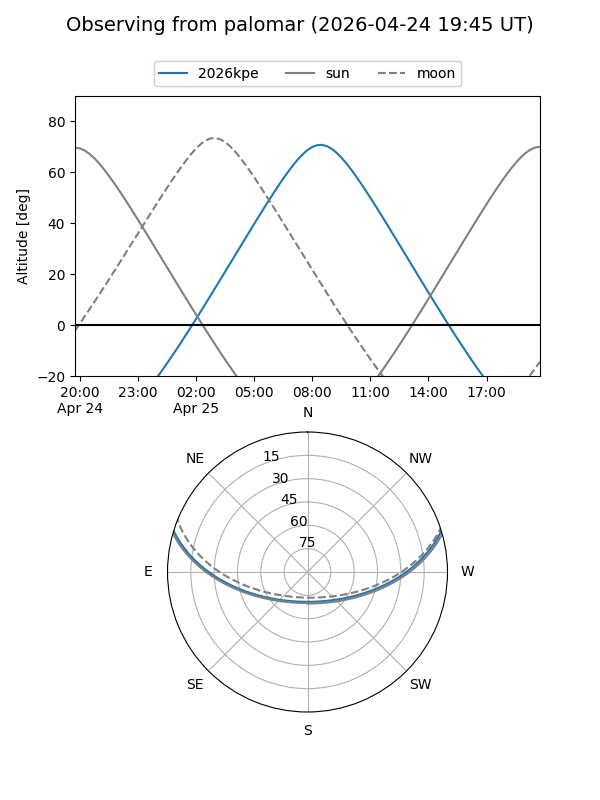
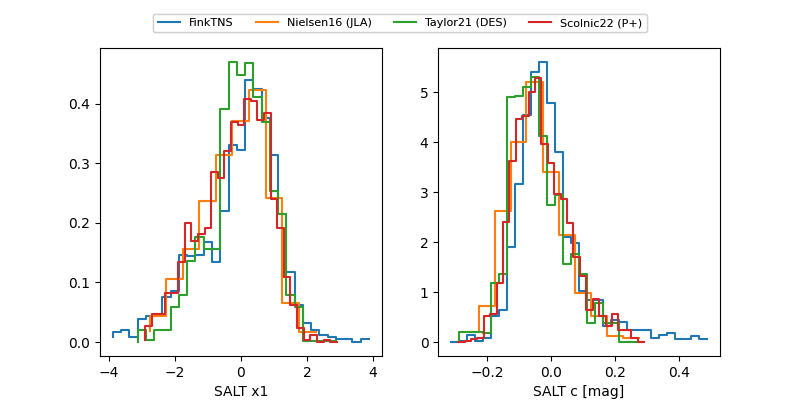

2026kpe
Target 2026kpe at 2026-04-25 09:50
Aliases and brokers:
FINK: link
Lasair: link
ALeRCE: link
TNS: link
YSE: link
alt names
ZTF26aatxzfs (ztf,fink_ztf)
2026kpe (tns,yse)
ATLAS26eun (atlas)
Coordinates:
equatorial (ra, dec) = 222.6205,+14.29864
equatorial (HMS+DMS) = 14:50:28.93,+14:17:55.10
galactic (l, b) = (14.1293,+59.46110)
Flags:
Photometry:
last ztfg=20.07
1 ztfg detections
Lightcurve

Visibility


Additional plots
